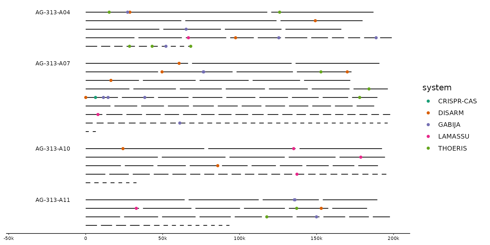
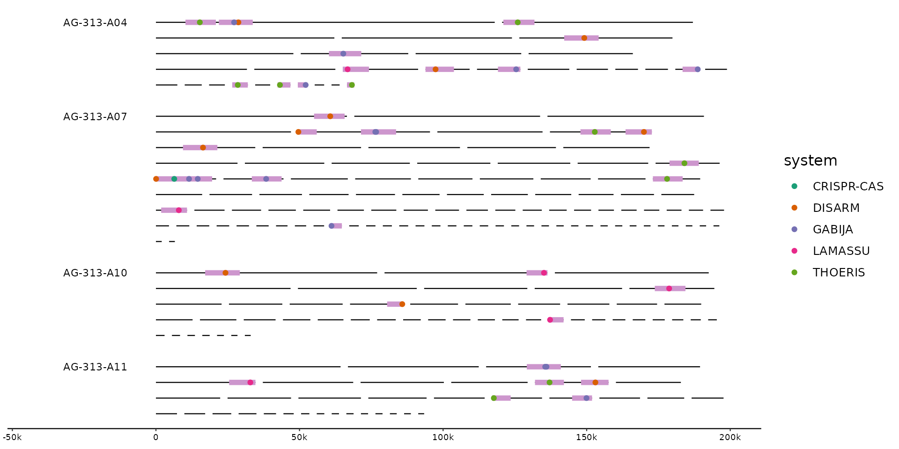
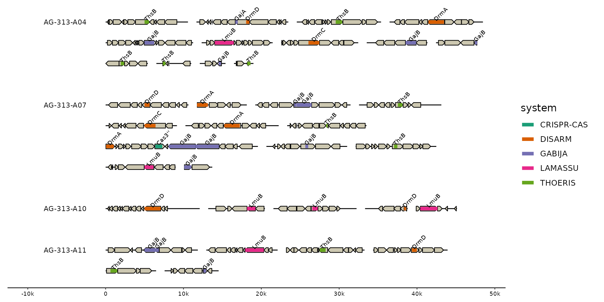

Show loci containing features of interest. Loci can either be provided
as predefined regions directly (loci=), or are constructed automatically
based on pre-selected features (via ...). Features within max_dist are
greedily combined into the same locus. locate() adds these loci as new
track so that they can be easily visualized. focus() extracts those loci
from their parent sequences making them the new sequence set. These sequences
will have their locus_id as their new seq_id.
focus( x, ..., .track_id = 2, .max_dist = 10000, .expand = 5000, .overhang = c("drop", "trim", "keep"), .locus_id = str_glue("{seq_id}_lc{row_number()}"), .locus_id_group = seq_id, .locus_bin = c("bin", "seq", "locus"), .locus_score = n(), .locus_filter = TRUE, .loci = NULL ) locate( x, ..., .track_id = 2, .max_dist = 10000, .expand = 5000, .locus_id = str_glue("{seq_id}_lc{row_number()}"), .locus_id_group = seq_id, .locus_bin = c("bin", "seq", "locus"), .locus_score = n(), .locus_filter = TRUE, .locus_track = "loci" )
| x | A gggenomes object |
|---|---|
| ... | Logical predicates defined in terms of the variables in the track
given by The arguments in ‘...’ are automatically quoted and evaluated in the context of the data frame. They support unquoting and splicing. See ‘vignette("programming")’ for an introduction to these concepts. |
| .track_id | the track to filter from - defaults to first feature track, usually "genes". Can be a quoted or unquoted string or a positional argument giving the index of a track among all tracks (seqs, feats & links). |
| .max_dist | Maximum distance between adjacent features to be included into the same locus, default 10kb. |
| .expand | The amount to nucleotides to expand the focus around the target features. Default 2kb. Give two values for different up- and downstream expansions. |
| .overhang | How to handle features overlapping the locus boundaries (including expand). Options are to "keep" them, "trim" them exactly at the boundaries, or "drop" all features not fully included within the boundaries. |
| .locus_id, .locus_id_group | How to generate the ids for the new loci
which will eventually become their new |
| .locus_bin | What bin to assign new locus to. Defaults to keeping the original binning, but can be set to the "seq" to bin all loci originating from the same parent sequence, or to "locus" to separate all loci into individual bins. |
| .locus_score | An expression evaluated in the context of all features
that are combined into a new locus. Results are stored in the column
|
| .locus_filter | An predicate expression used to post-filter identified
loci. Set |
| .loci | A data.frame specifying loci directly. Required columns are
|
| .locus_track | The name of the new track containing the identified loci. |
focus: Identify regions of interest and zoom in on them
locate: Identify regions of interest and add them as new feature track
# Let's hunt some defense systems in marine SAGs # read the genomes s0 <- read_seqs(ex("gorg/gorg.fna"))#>#>s1 <- s0 %>% # strip trailing number from contigs to get bins mutate(bin_id = str_remove(seq_id, "_\\d+$")) # gene annotations from prokka g0 <- read_feats(ex("gorg/gorg.gff"))#>#>#> #> #> #>#>#> #> #> #> #> #># best hits to the PADS Arsenal database of prokaryotic defense-system genes # $ mmseqs easy-search gorg.fna pads-arsenal-v1-prf gorg-pads-defense.o6 /tmp \ # --greedy-best-hits f0 <- read_feats(ex("gorg/gorg-pads-defense.o6"))#>#>f1 <- f0 %>% # parser system/gene info separate(seq_id2, into=qc(seq_id2, system, gene), sep=",") %>% filter( evalue < 1e-10, # get rid of some spurious hits # and let's focus just on a few systems for this example system %in% c("CRISPR-CAS", "DISARM", "GABIJA", "LAMASSU", "THOERIS")) # plot the distribution of hits across full genomes gggenomes(g0, s1, f1, wrap=2e5) + geom_seq() + geom_bin_label() + scale_color_brewer(palette="Dark2") + geom_point(aes(x=x,y=y, color=system), data=feats())# hilight the regions containing hits gggenomes(g0, s1, f1, wrap=2e5) %>% locate(.track_id = feats) %>% identity() + geom_seq() + geom_bin_label() + scale_color_brewer(palette="Dark2") + geom_feat(data=feats(loci), color="plum3") + geom_point(aes(x=x,y=y, color=system), data=feats())#># zoom in on loci gggenomes(g0, s1, f1, wrap=5e4) %>% focus(.track_id = feats) + geom_seq() + geom_bin_label() + geom_gene() + geom_feat(aes(color=system)) + geom_feat_tag(aes(label=gene)) + scale_color_brewer(palette="Dark2")#> #> #> #> #> #>